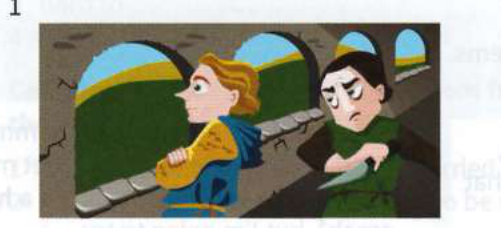
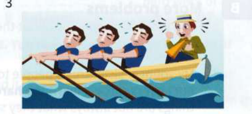
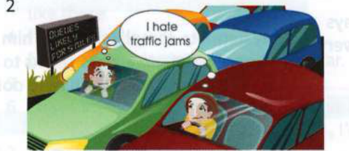
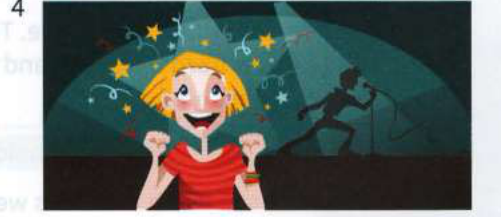

Exercises
57.1
Are the idioms in these sentences used correctly? If not, correct them.
1
Nobody in their correct mind would lend him money again. He never pays it back.
2
Ben had always said he wanted to study law, so his mother is finding it hard to get her mind round his decision to leave university and join a rock band.
3
He's always talking about cars. I've never met anyone with such a one-way mind.
4
I'm sure you can mend your own bike if you put your mind to it.
5
What can we do to take Marco's mind out of his problems?
6
Now, I'd like you all to throw your mind back to your very first day at school.
57.2
Complete each dialogue with an idiom from the opposite page.
Max:
I'm off now then. See you in a couple of hours.
Beth:
Bye. ....................................................
Harry:
You've bought another pair of shoes?! How much were they?
Tina:
....................................................!
Nathan:
Why are you yawning?
Molly:
I'm .....................................................
Lisa:
I'm thinking of taking a year off to cycle round the world.
Rita:
You must be ....................................................!
Joe:
Were you able to forget about the exam today?
Lou:
No, it's .................................................... all day.
Police officer:
Please .................................................... and tell us exactly what happened on the night in question.
Tess:
Well, it's a long time ago now ...
57.3
Which idioms do these pictures make you think of? Complete the captions.
1

He needs to .....................................................
3

Come on - ....................................................!
2

I can ....................................................
4

That singer ....................................................!
57.4
Replace the underlined part of each sentence with an idiom.
1
Walk carefully on the ice - it's very slippery.
2
The actor's performance was amazing!
3
It goes without saying that you should always be very polite at an interview.
4
People who drink and drive must be totally crazy.
5
My twin brother can tell exactly what I'm thinking.
6
I'm always so bored in physics lessons!
7
Their argument worried Freya for a long time.
8
You'll find it quite easy to learn the guitar if you make a bit of an effort.